ECG Video Blog #408 (392) — 20 phút sau ...
======================================
BẤM VÀO ĐÂY — để xem Video trình bày ca bệnh này! (18:00 phút)
- Dưới đây là các slide dùng trong video trình bày của tôi.
- Để xem bàn luận đầy đủ về ca này — Xem ECG Blog #392 —
======================================
Điện tâm đồ ở Hình 1 được ghi từ một người đàn ông ngoài 60 tuổi — ông mô tả cảm giác "tức ngực" khởi phát đột ngột 20 phút trước đó, nhưng hiện tại (vào thời điểm ghi điện tâm đồ này) — ông không còn triệu chứng nữa.
- Với bệnh sử này — BẠN sẽ đọc điện tâm đồ này như thế nào?
- Có nên kích hoạt phòng thông tim (cath lab) không?

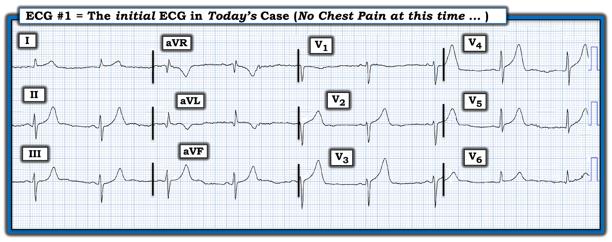
Hình 1: Điện tâm đồ ban đầu trong ca hôm nay. (Để nhìn rõ hơn — tôi đã số hóa điện tâm đồ gốc bằng PMcardio).

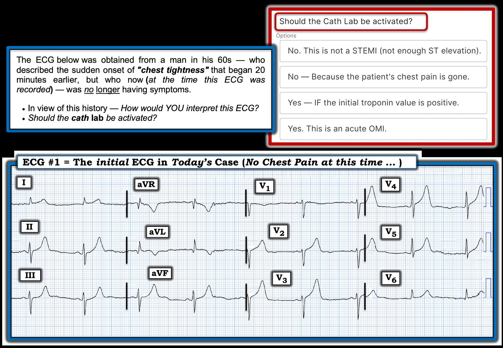

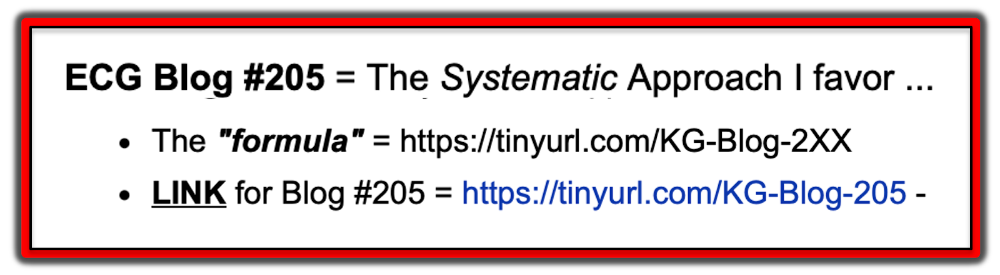

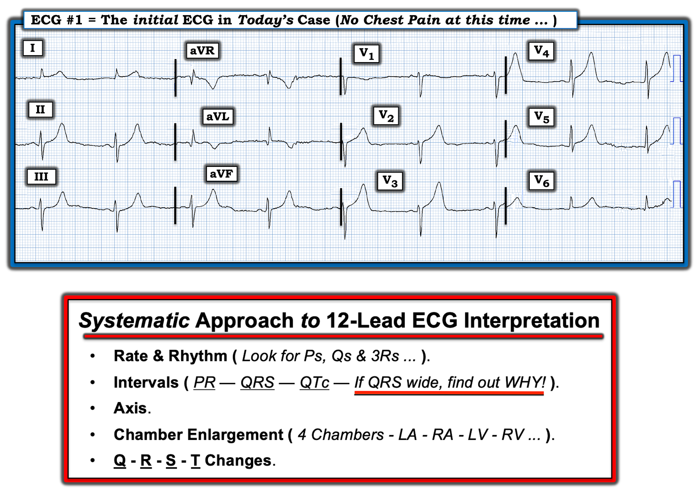

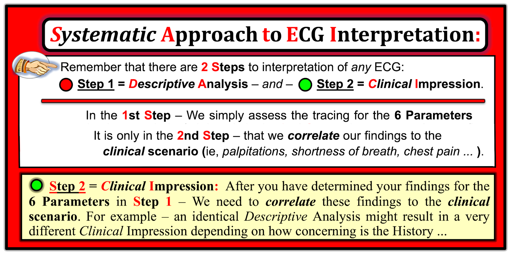

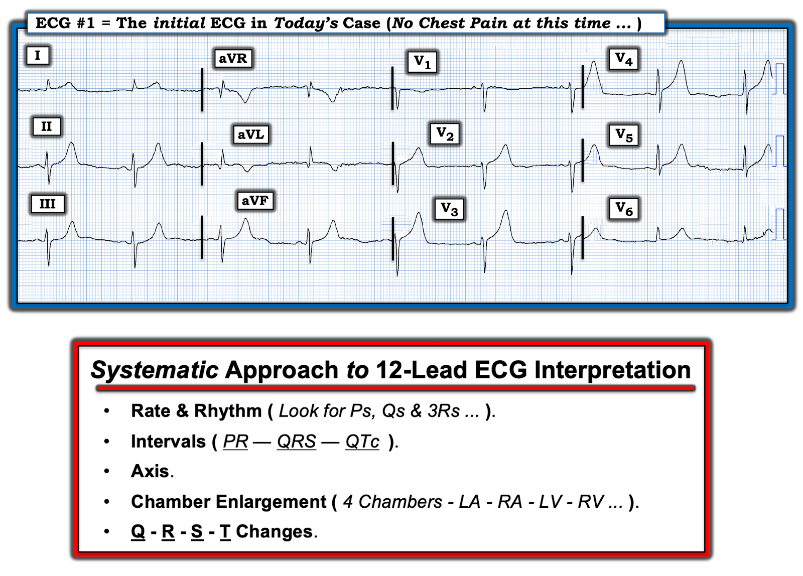

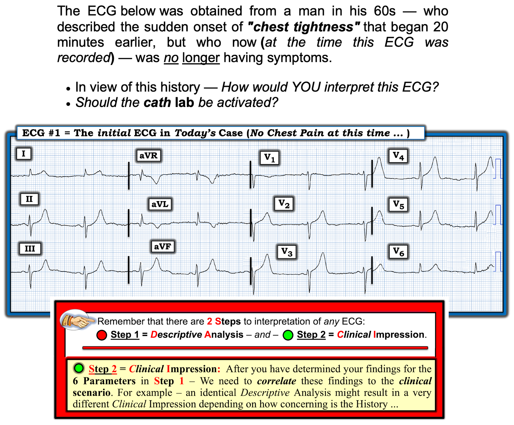

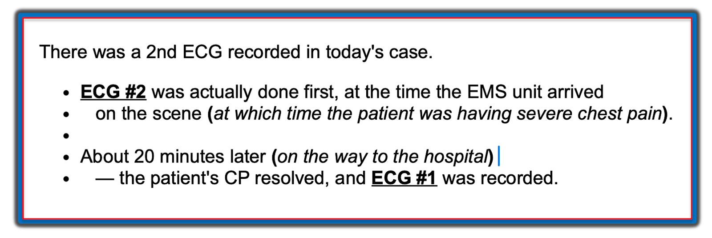

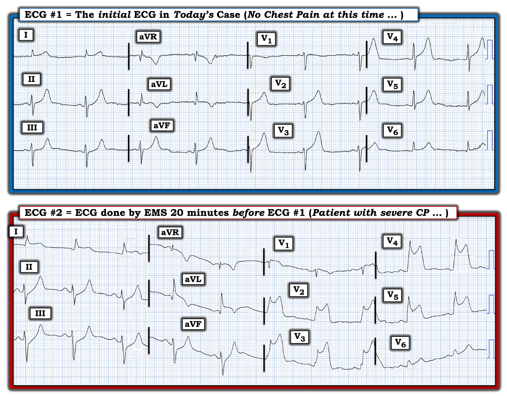

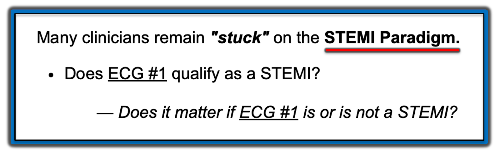


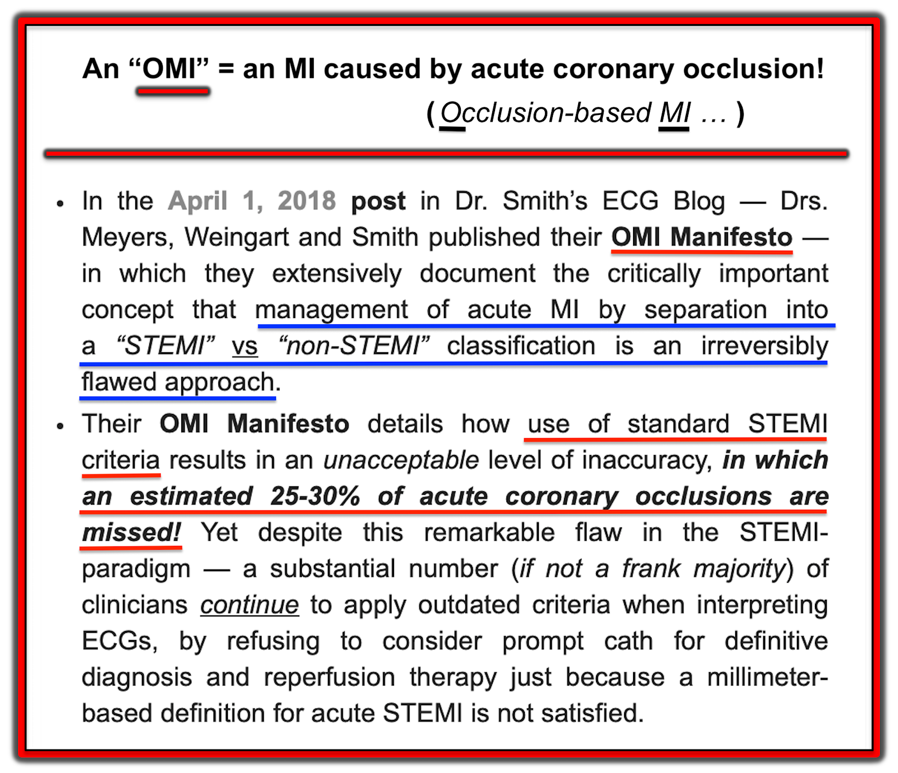

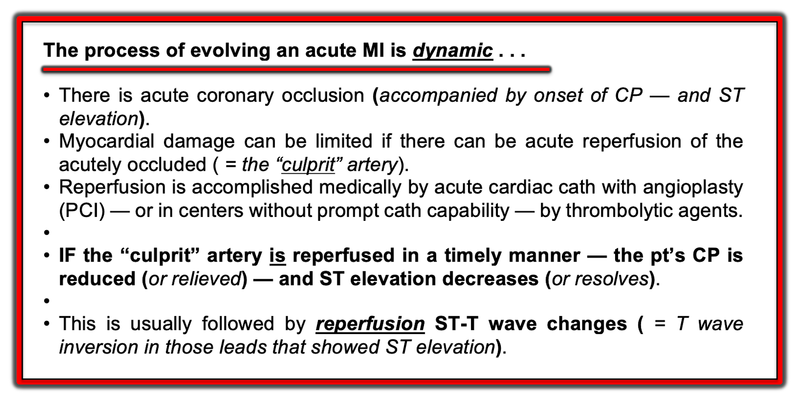

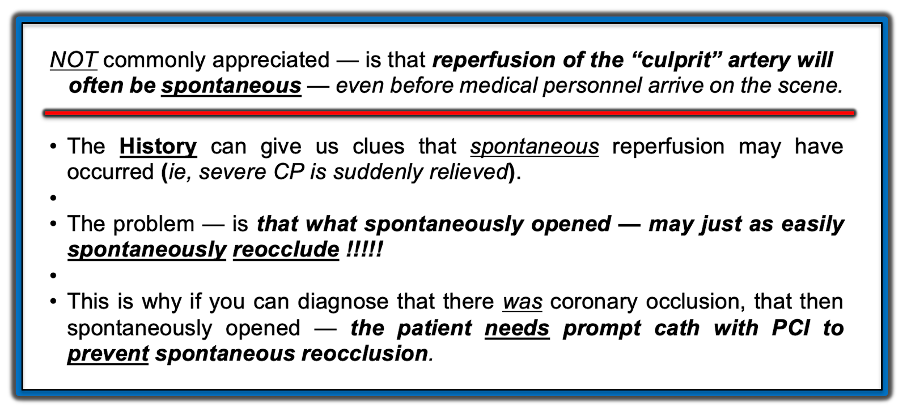

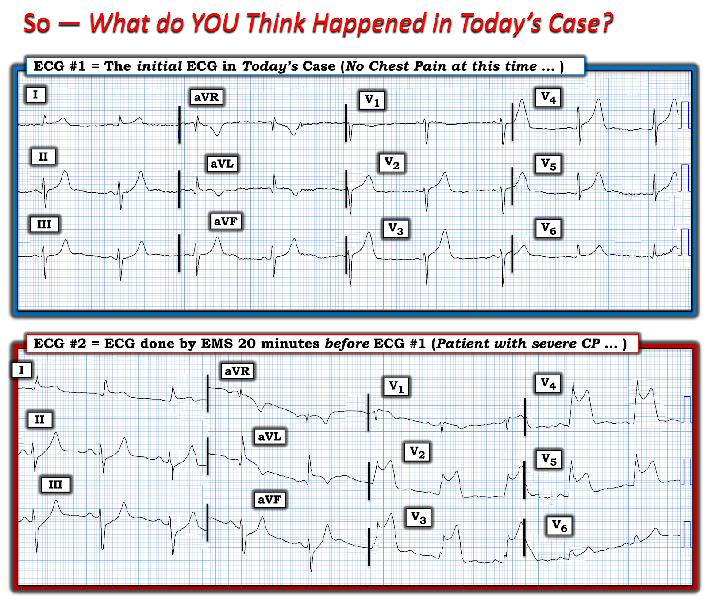

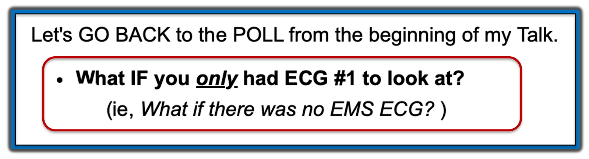

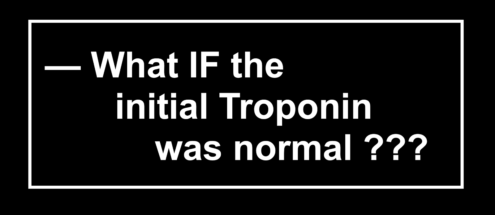

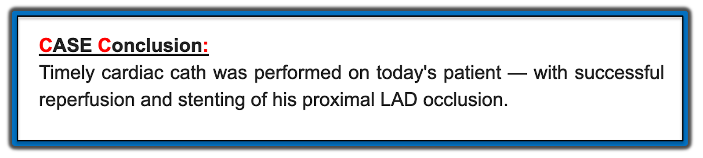

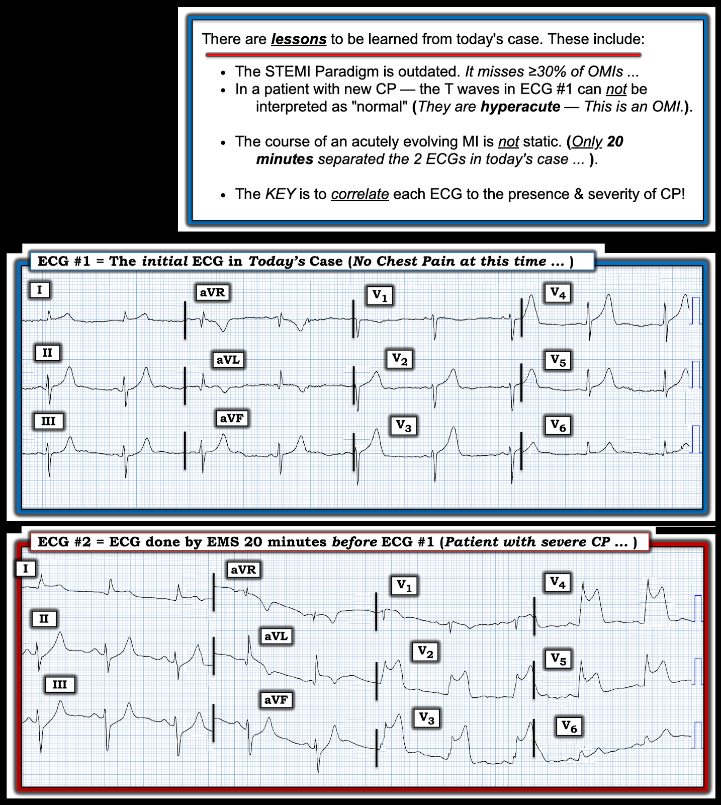
Các Bài ECG Blog Liên quan đến Ca hôm nay:
- ECG Blog #205 — Ôn lại Cách tiếp cận Hệ thống của tôi để đọc điện tâm đồ 12 chuyển đạo.
- ECG Blog #185 — Ôn lại Cách tiếp cận Ps, Qs, 3R để đọc nhịp.
- mmm
- ECG Blog #193 — Ôn lại khái niệm vì sao thuật ngữ “OMI” ( = nhồi máu cơ tim do tắc — Occlusion-based MI) nên thay thế thuật ngữ quen thuộc hơn là STEMI — và — ôn lại những điều cơ bản về cách dự đoán "động mạch thủ phạm" (culprit artery).
- ECG Blog #194 — Ôn lại cách nhận biết LIỆU động mạch “thủ phạm” (tức là, động mạch bị tắc cấp) đã tái tưới máu hay chưa, dựa vào dữ liệu lâm sàng và điện tâm đồ.
- ECG Blog #294 — Cách nhận biết LIỆU động mạch "thủ phạm" (culprit) đã tái tưới máu hay chưa.
- ECG Blog #183 — Ôn lại khái niệm Sóng T deWinter (kèm bản sao Hình minh họa từ bài báo gốc của deWinter trên NEM).
- ECG Blog #318 — ECG Blog #340 — và ECG Blog #341 — Thêm về sóng T deWinter và sóng T kiểu deWinter.
- ECG Blog #218 — Ôn lại CÁCH xác định một Sóng T là Tối cấp?
- ECG Blog #260 — ECG Blog #222 — và ECG Blog #292 — Ôn lại khi nào một sóng T là tối cấp — và khái niệm thay đổi ST-T "động" (dynamic).
- ECG Blog #387 — Thay đổi động trong vòng 2 phút.
- ECG Blog #230 — Cách so sánh các điện tâm đồ liên tiếp.
- ECG Blog #115 — Cho thấy một ví dụ về việc điện tâm đồ có thể thay đổi mạnh mẽ đến mức nào chỉ trong vòng 8 phút.
- ECG Blog #337 — một ca OMI bị chẩn đoán nhầm là NSTEMI ...
- ECG Blog #184 — minh họa mối liên hệ đối ngược như ảnh soi gương "kỳ diệu" khi thiếu máu cục bộ cấp giữa chuyển đạo III và chuyển đạo aVL (được trình bày trong Audio Pearl #2 ở bài blog này).
- ECG Blog #167 — một ca khác về mối liên hệ đối ngược như ảnh soi gương "kỳ diệu" giữa chuyển đạo III và chuyển đạo aVL giúp xác nhận OMI cấp.
- ECG Blog #271 — Ôn lại cách xác định đường nền của đoạn ST (kèm bàn luận về thực thể thiếu máu cục bộ dưới nội tâm mạc lan tỏa).
- ECG Blog #258 — Cách "định tuổi" một ổ nhồi máu dựa trên điện tâm đồ ban đầu.
- Tầm quan trọng của Mô hình OMI (so với mô hình STEMI cũ) mới — Xem Bình luận của tôi trong bài đăng ngày 31 tháng 7 năm 2020 trên Dr. Smith's ECG Blog.
- Để ôn lại trường hợp dù có OMI cấp — hs-troponin ban đầu vẫn có thể trả về bình thường — Xem bài đăng ngày 24 tháng 3 năm 2023 trên Dr. Smith’s ECG Blog.
- Bài đăng ngày 9 tháng 1 năm 2019 trên Dr. Smith's ECG Blog (Vui lòng cuộn xuống cuối trang để xem Bình luận của tôi). Ca này đáng chú ý vì các thay đổi ST-T động được ghi nhận. Cần hiểu rõ rằng: i) Thiếu máu cục bộ/nhồi máu cấp không phải là nguyên nhân tiềm năng duy nhất của những thay đổi như vậy (thông tim bình thường); ii) Thay đổi tần số tim, trục mặt phẳng trán và/hoặc tư thế bệnh nhân không phải lúc nào cũng giải thích được những thay đổi như vậy; và, iii) Các thực thể như biến thể tái cực, LVH và/hoặc viêm cơ-màng ngoài tim cấp đôi khi đều có thể góp phần tạo nên một diễn tiến thay đổi ST-T động đầy thách thức trên các điện tâm đồ liên tiếp.
- Bài đăng ngày 22 tháng 8 năm 2020 trên Dr. Smith's ECG Blog — minh họa một ca khác có thay đổi ST-T động do một biến thể tái cực.
- Bài đăng ngày 31 tháng 7 năm 2018 trên Dr. Smith's ECG Blog (Vui lòng cuộn xuống cuối trang để xem Bình luận của tôi). Ca này là một ví dụ tuyệt vời về thay đổi ST-T động trên các bản ghi liên tiếp ở một bệnh nhân có ổ nhồi máu cấp đang tiến triển liên tục.

=======================
PHẦN BỔ SUNG: Một số tài liệu bổ sung về chẩn đoán OMI trên điện tâm đồ.
=======================

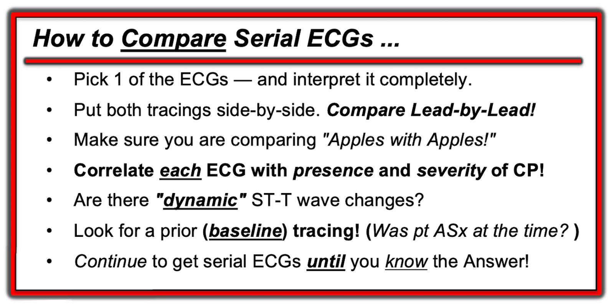

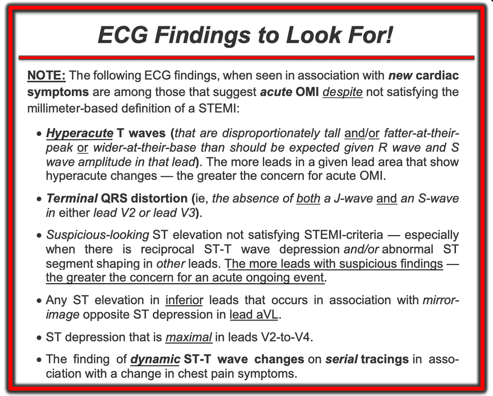
==================================
- Tôi đã thêm một số Pearl Audio bên dưới với nội dung liên quan đến ca hôm nay.

Hôm nay: ECG Media PEARL #1 (3:00 phút Audio) — Ôn lại khái niệm Sóng T deWinter (và sự thường gặp của các biến thể trên "chủ đề" này ).

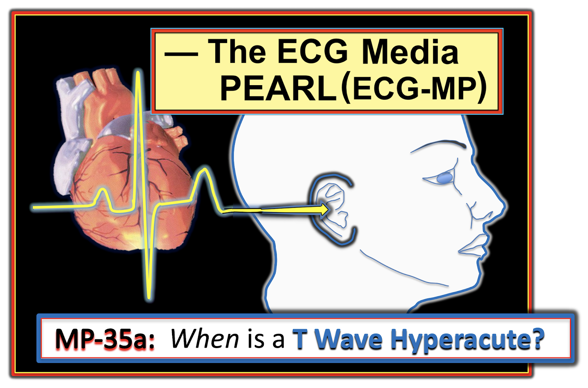
ECG Media PEARL #35a (4:50 phút Audio) — KHI NÀO một Sóng T là Tối cấp so với một biến thể tái cực?

ECG Media PEARL #39a (4:50 phút Audio) — Ôn lại khái niệm Thay đổi ST-T Động (và dấu hiệu điện tâm đồ này có thể giúp xác định có chỉ định thông tim cấp cứu hay không như thế nào).

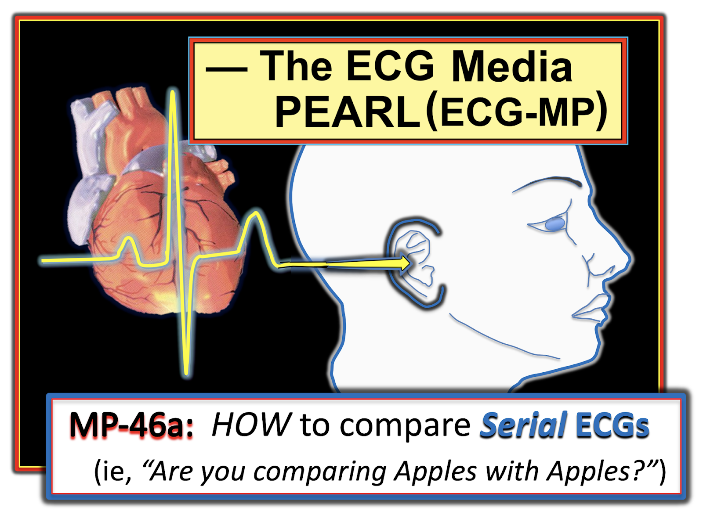
ECG Media PEARL #46a (6:35 phút Audio) — Ôn lại CÁCH so sánh các Điện tâm đồ Liên tiếp (tức là, Bạn đang so sánh "Táo với Táo" — hay — với Cam?).

ECG Media PEARL #10 (10 phút Audio) — ôn lại khái niệm vì sao thuật ngữ “OMI” ( = nhồi máu cơ tim do tắc — Occlusion-based MI) nên thay thế thuật ngữ quen thuộc hơn là STEMI — và — ôn lại những điều cơ bản về cách dự đoán "động mạch thủ phạm" (culprit artery).

ECG Media PEARL #11 (6 phút Audio) — Ôn lại cách nhận biết LIỆU động mạch “thủ phạm” (tức là, động mạch bị tắc cấp) đã tái tưới máu hay chưa, dựa vào tiêu chuẩn lâm sàng và điện tâm đồ.